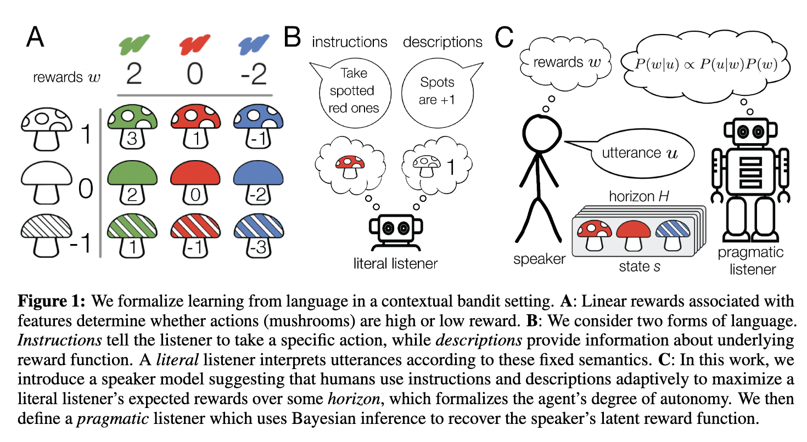
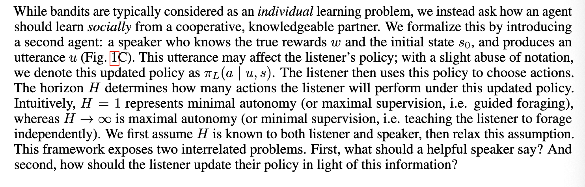
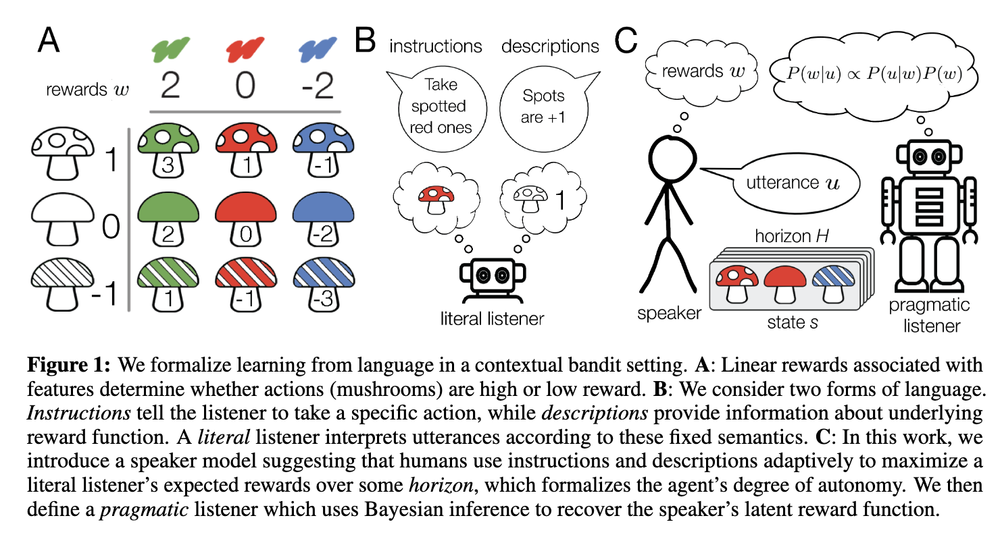

[TOC]
- Title: How to talk so AI will learn: Instructions, descriptions, and autonomy
- Author: Theodore R. Sumers et. al.
- Publish Year: NeurIPS 2022
- Review Date: Wed, Mar 15, 2023
- url: https://arxiv.org/pdf/2206.07870.pdf
Summary of paper

Motivation
- yet today, we lack computational models explaining such language use
Contribution
- To address this challenge, we formalise learning from language in a contextual bandit setting and ask how a human might communicate preferences over behaviours.
- (obtain intent (preference) from the presentation (behaviour))
- we show that instructions are better in low-autonomy settings, but descriptions are better when the agent will need to act independently.
- We then define a pragmatic listener agent that robustly infers the speaker’s reward function by reasoning how the speaker expresses themselves. (language reward module?)
- we hope these insights facilitate a shift from developing agents that obey language to agents that learn from it.
Some key terms
two distinct types of language
- instructions
- which provide information about the desired policy
- descriptions
- which provide information about the reward function
Issues
- prior work has highlighted the difficulty of specifying our desires via numerical reward functions
- here, we explore language as a means to communicate them
- while most previous work on language input to AI systems focuses on instructions, we study instructions alongside more abstract, descriptive language
- from instructions to descriptions
how we learn from reward functions from others
- inverse reinforcement learning
However, natural language affords richer, under-explored forms of teaching
- for example, an expert teaching a seminar might instead describe how to recognise edible or toxic mushrooms based on their features, thus providing highly generalised information
- (it means instead of the instruction, the text info also includes the rationales)
discovery
- The horizon quantifies notions of autonomy described in previous work. If the horizon is short, the agent is closely supervised; at longer horizons, they are expected to act more independently. We then analyse instructions (which provide a partial policy) and descriptions (which provide partial information about the reward function). We show that instructions are optimal at short horizons, while descriptions are optimal at longer ones.
Limitations
-
In practice, it is difficult to specify a reward function to obtain desired behaviour, motivating learning the reward function from social input.
-
most social learning methods assume the expert is simply acting optimally, but recent pragmatic methods instead assume the expert is actively teaching.
Learning reward functions from descriptions
- Rather than expressing specific goals, reward-descriptive language encodes abstract information about preferences or the world.
- Other related lines of work use language which describes agent behaviours.
- However, a smaller body of work uses it for RL : by learning reward function directly from existing bodies of text or interactive, free-form language input.
- our work provides a formal model of such language in order to compare it with more typically studied instructions.
Speaker model is essential
- we show how a carefully specified speaker model, incorporating both instructions and descriptions, allows our pragmatic listener to robustly infer a speaker’s reward function.
- this allows our pragmatic listener to robustly infer a speaker’s reward function
Reward assumption
- we assume rewards are a linear function of these features (e.g., green mushrooms tend to be tasty)
- do not discuss the perturbed reward problem
Formalising learning from language in contextual bandits

- H=1 means it is no more action sequence
- for H > 1, there is no more single-step action supervision
difference between descriptions and instructions
- instructions maps to actions
- descriptions maps to reward signals

what is the point
- as the horizon lengthens, however, descriptions generalize better, thus allowing agents to solve unseen states based on the rationale information